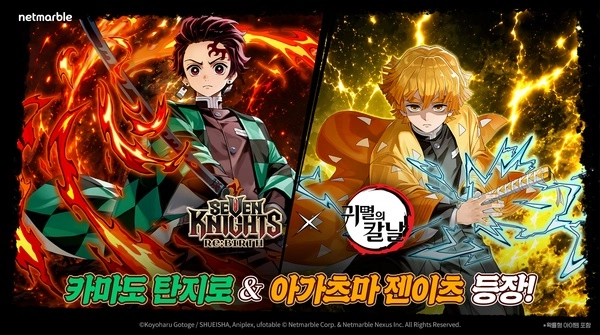
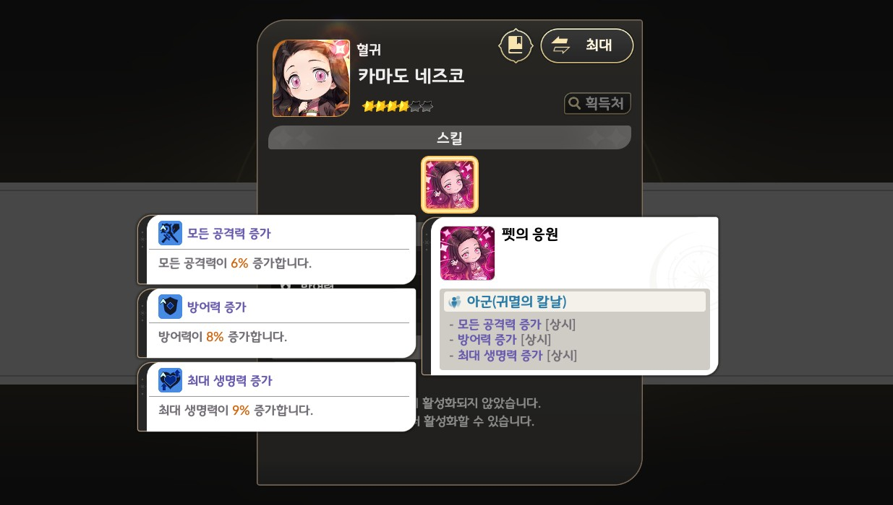
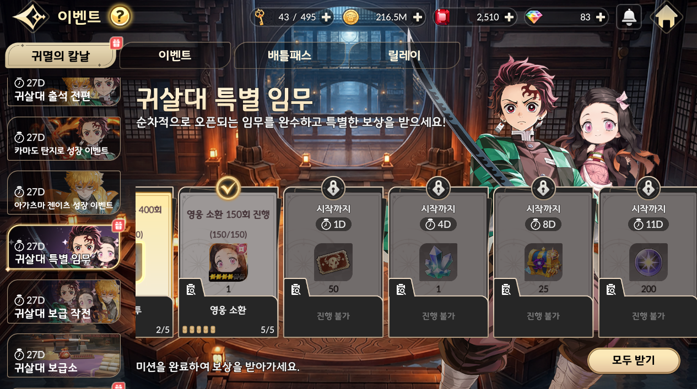
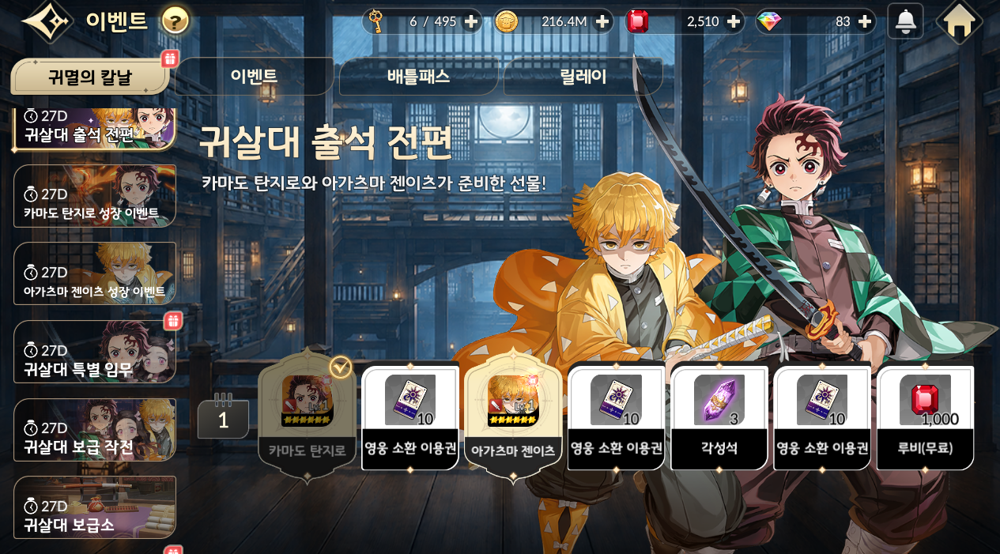

세븐나이츠 리버스 귀멸의 칼날 네즈코 4장 얻는 법, 영웅 소환 150회·반복 전투 1,000회
세븐나이츠 리버스 귀멸의 칼날 콜라보 이벤트 탭을 열면 메뉴가 줄줄이 늘어서 있어서, 뭐부터 챙겨야 할지 막막하지 않으셨나요? 그중에서도 전설 펫 '카마도 네즈코'는 인벤 기사 기준으로 이벤트만 해도 4장까지 모을 수 있다고 해서, 오늘은 이 네즈코 4장에만 집중해서 수급 경로와 마감 전에 챙길 순서를 풀어볼게요. 오늘이 10월 3일 토요일이니까 10월 29일 점검까지는 D-26이에요.

세븐나이츠 리버스 × 귀멸의 칼날 콜라보 키비주얼이에요. ⓒKoyoharu Gotoge / SHUEISHA, Aniplex, ufotable ⓒNetmarble Corp. & Netmarble Nexus Inc.
이미지 출처: 게임메카 · 네이버 본문엔 받아서 재업로드 권장
네즈코 4장은 어디서 어떻게 모으나요?
카마도 네즈코는 귀살대 특별 임무에서 영웅 소환 150회 달성으로 1장, 반복 전투 1,000회 달성으로 1장을 받고, 귀살대 보급소에서 2장을 교환해 총 4장을 모을 수 있어요. 인벤 기사 기준이에요.
| 경로 | 조건 | 장수 |
|---|---|---|
| 귀살대 특별 임무 | 영웅 소환 150회 달성 | 1장 |
| 귀살대 특별 임무 | 반복 전투 1,000회 달성 | 1장 |
| 귀살대 보급소 | 등나무 꽃 주화로 교환 | 2장 |
4장을 다 모으면 네즈코를 6성까지 키울 수 있다고 하네요. 효과는 귀멸의 칼날 소속 아군의 모든 공격력·방어력·최대 생명력을 올려주는 쪽이라, 콜라보 캐릭터를 파티에 넣을수록 도움이 되죠.

카마도 네즈코 펫 정보 화면이에요. 귀멸의 칼날 소속 아군에게 공격력·방어력·최대 생명력 증가가 상시로 붙어요.
이미지 출처: 인벤 · 네이버 본문엔 받아서 재업로드 권장
마감은 언제까지고, 보급소는 몇 시에 닫히나요?
귀살대 보급소는 10월 29일(목) 오전 4시 59분까지 이용할 수 있고(인벤 기사 기준), 콜라보는 10월 1일부터 29일까지 두 차례로 나눠 진행돼요.
- 1차 업데이트: 10월 1일(목)
- 2차 업데이트: 10월 15일(목), 토미오카 기유·코쵸우 시노부 합류
- 귀살대 보급소 마감: 10월 29일(목) 오전 4시 59분
지금 내용은 2차 업데이트 전인 1차 기준이라, 네즈코만큼은 2차 전에 챙겨두는 쪽이 마음 편하죠~
마감 전에 챙길 순서는 어떻게 잡을까요?
이미 하고 계신 반복 전투와 영웅 소환 진행도부터 확인하고, 반복 전투로 모은 등나무 꽃 주화는 보급소 교환용으로 남겨두는 순서를 추천드려요. 등나무 꽃 주화는 반복 전투와 레이드에서 모은다고 하거든요.
- 이벤트 탭의 '귀살대 특별 임무'에서 소환 150회와 반복 전투(쫄작) 1,000회 진행도부터 확인해 봐요. 특별 임무는 순차적으로 열리는 방식이라 뒤쪽 임무는 아직 잠겨 있을 수 있어요. 반복 전투와 소환, 성장 던전, 레이드, 결투장 같은 콘텐츠를 하면서 진행된다고 하니, 따로 시간을 내기보다 평소 하던 걸 하면서 같이 채우는 구조인 셈이죠.
- 반복 전투는 임무 횟수도, 주화도 같이 쌓이는 콘텐츠라 평소 돌리던 대로 먼저 굴려두는 게 이득이거든요. 1,000회 임무가 열려 있다고 치고 26일로 나누면 하루 40판 안팎이라, 한꺼번에 몰아 하기보다 매일 조금씩 쌓는 쪽이 부담이 덜해요.
- 소환 150회는 재화가 드는 일이니까 무리해서 당기기보다 지금 어디쯤인지 보고 계획해서 채워가면 돼요.
- 주화가 모이면 보급소에서 네즈코 2장부터 교환하는 순서예요. 마감 직전은 피해서 10월 28일(수) 밤 안에는 끝내두는 걸 권해요.
| 시점 | 할 일 |
|---|---|
| 오늘(10월 3일 토) | 특별 임무 진행도 확인, 반복 전투 돌리기 시작 |
| 10월 15일(목) 2차 업데이트 전 | 열린 임무부터 진행도 채우기(임무 오픈 시점은 인게임에서 확인) |
| 10월 28일(수) 밤까지 | 보급소에서 네즈코 2장 교환 |

귀살대 특별 임무 화면이에요. 영웅 소환 150회 진행 카드에 네즈코 1장이 걸려 있고, 뒤쪽 임무는 '시작까지 N일'로 순차 오픈돼요.
이미지 출처: 인벤 · 네이버 본문엔 받아서 재업로드 권장
내 특별 임무 진행도예요.
귀살대 보급 작전이랑 보급소는 뭐가 달라요?
보급 작전은 반복 전투와 레이드에서 모은 등나무 꽃 주화로 네즈코와 콜라보 장비, 각성석 등을 교환하는 이벤트로 소개돼 있고, 이벤트 왼쪽 목록에는 보급 작전과 보급소 탭이 따로 있어요. 이름이 비슷한 탭이 나란히 있어서 처음엔 헷갈리기 쉬운데요, 탭마다 역할이 어떻게 나뉘는지는 화면에서 직접 열어 확인해 보셔야 해요. 네즈코 2장은 보급소에서 교환한다고 하니, 교환 목록엔 장비·각성석도 같이 있다는 점을 감안해서 네즈코 항목부터 찾아보시는 게 좋답니다.

이벤트 화면 왼쪽에 귀살대 출석 전편, 특별 임무, 보급 작전, 보급소 탭이 이어져 있어요.
이미지 출처: 인벤 · 네이버 본문엔 받아서 재업로드 권장
귀살대 보급소 교환 목록이에요.
헷갈리기 쉬운 부분이 있어요
네즈코 수급 숫자는 기사 기준이라, 카운트 범위와 교환 조건은 이벤트 화면의 설명을 기준으로 보시는 게 가장 정확해요.
- 처음 받는 별 개수: 6성까지 키울 수 있다는 설명과 4성 네즈코라는 표기가 함께 나와서, 받은 뒤 화면에서 직접 보셔야 해요.
- 영웅 소환 150회: 일반 소환, 콜라보 소환, 소환권 사용 중 어디까지 세는지는 아직 안 나와 있어요.
- 반복 전투 1,000회: 어떤 콘텐츠까지 세는지, 소탕이 들어가는지도 안 나와 있어요.
- 교환 가격·횟수 제한·주화 획득량: 네즈코 1장당 등나무 꽃 주화가 얼마인지, 몇 번까지 바꿀 수 있는지, 반복 전투 1회에 주화가 얼마나 쌓이는지도 아직 안 나와 있어요.
확인 위치: 인게임 이벤트 > 귀살대 보급소 화면(스샷 2) · 확인되면 아래에 채워주세요.
| 항목 | 값(확인 후 입력) |
|---|---|
| 네즈코 1장당 교환 가격(등나무 꽃 주화) | — |
| 교환 횟수 제한 | — |
| 반복 전투 1회당 주화 획득량 | — |
이런 부분은 넷마블 공식 공지나 공식 카페에 안내가 올라오면 그 기준으로 맞춰 보는 게 가장 정확해요.
자주 묻는 질문
Q. 탄지로는 어떻게 받나요?
귀살대 출석 전편 1일차 보상으로 6성 카마도 탄지로를 받습니다. 네즈코처럼 횟수를 채울 필요 없이 접속만 하면 되고, 3일차에는 6성 아가츠마 젠이츠도 받습니다(인벤 기사 기준).
Q. 콜라보가 끝나면 네즈코는 다시 못 얻나요?
콜라보가 10월 29일 점검 전까지라는 내용만 있고, 이후에 다시 열릴지는 나와 있지 않아요. 그래서 4장을 목표로 한다면 이번 기간 안에 끝내는 걸 기준으로 잡아두는 게 마음 편해요.
Q. 탄지로를 받았는데 네즈코까지 꼭 챙겨야 하나요?
탄지로는 출석으로 받는 캐릭터이고 네즈코는 귀멸의 칼날 소속 아군의 능력치를 올려주는 펫이라 쓰임이 달라요. 이번 기간 안에 모을 수 있는 쪽이니, 여유가 되면 같이 챙겨 보셔도 좋겠죠.
Q. 29일 낮에 해도 되는 거 아닌가요?
마감이 29일 오전 4시 59분이라 29일 낮에는 이미 닫혀 있어요. 날짜만 보면 29일이라 방심하기 쉬운데, 29일 새벽 4시 59분에 닫혀서 28일 밤을 넘기면 사실상 끝이에요.
네즈코 4장 정리
소환 150회, 반복 전투 1,000회, 보급소 교환 2장 이렇게 세 군데만 채우면 네즈코 4장이 모여요. 마감까지 26일이면 넉넉한 편이니 반복 전투부터 차곡차곡 돌려두시고, 28일 밤 전에 보급소만 한 번 들러보시면 돼요 ㅎㅎ 즐겜하세요~
✔ 세븐나이츠 리버스 같이 보기 좋은 내용
· 도루코 태오 면도기 세븐나이츠리버스 7777쿠폰
· 세븐나이츠 리버스 쫄작 효율적인 방법 가이드
· 세븐나이츠 리버스 티어표 태오 타카 포함 쿠폰 정보
참고한 곳 (2026.10.03 기준)
· 인벤 — 귀살대 특별 임무·보급소 기사
· 게임메카 — 콜라보 일정·출석 보상 기사
· 경향게임스 — 콜라보 일정 기사